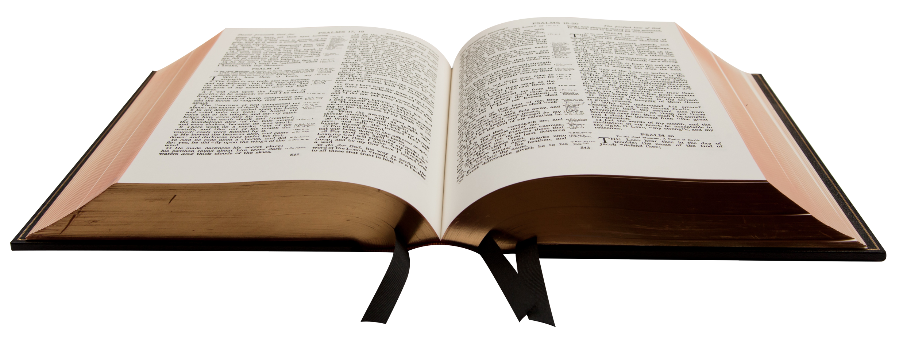

GENESIS verse 1 to end
Genesis 1
- In the abeginning, God created the heavens and the earth.
- The earth was bwithout form and void, and darkness was over the face of the deep. And the Spirit of God was hovering over the face of the waters.
- And God said, c“Let there be light,” and there was light.
- And God saw that the light was good. And God separated the light from the darkness.
- God called the light Day, and the darkness he called Night. And there was evening and there was morning, the first day.
- And God said, d“Let there be an expanse1 in the midst of the waters, and let it separate the waters from the waters.”
- And God made2 the expanse and eseparated the waters that were under the expanse from the waters that were fabove the expanse. And it was so.
- And God called the expanse Heaven.3 And there was evening and there was morning, the second day.
- And God said, g“Let the waters under the heavens be gathered together into one place, and let the dry land appear.” And it was so.
- God called the dry land Earth,4 and the waters that were gathered together he called Seas. And God saw that it was good.
- And God said, h“Let the earth sprout vegetation, plants5 yielding seed, and fruit trees bearing fruit in which is their seed, each according to its kind, on the earth.” And it was so.
- The earth brought forth vegetation, plants yielding seed according to their own kinds, and trees bearing fruit in which is their seed, each according to its kind. And God saw that it was good.
- And there was evening and there was morning, the third day.
- And God said, “Let there be lights in the expanse of the heavens to separate the day from the night. And let them be for isigns and for jseasons,6 and for days and years,
- And let them be lights in the expanse of the heavens to give light upon the earth.” And it was so.
- And God kmade the two great lights—the greater light to rule the day and the lesser light to rule the night—and the stars.
- And God set them in the expanse of the heavens to give light on the earth,
- to lrule over the day and over the night, and to separate the light from the darkness. And God saw that it was good.
- And there was evening and there was morning, the fourth day.
- And God said, “Let the waters swarm with swarms of living creatures, and let birds7 fly above the earth across the expanse of the heavens.”
- So mGod created the great sea creatures and every living creature that moves, with which the waters swarm, according to their kinds, and every winged bird according to its kind. And God saw that it was good.
- And God blessed them, saying, n“Be fruitful and multiply and fill the waters in the seas, and let birds multiply on the earth.”
- And there was evening and there was morning, the fifth day.
- And God said, “Let the earth bring forth living creatures according to their kinds—livestock and creeping things and beasts of the earth according to their kinds.” And it was so.
- And God made the beasts of the earth according to their kinds and the livestock according to their kinds, and everything that creeps on the ground according to its kind. And God saw that it was good.
- Then God said, o“Let us make man8 in our image, pafter our likeness. And qlet them have dominion over the fish of the sea and over the birds of the heavens and over the livestock and over all the earth and over every creeping thing that creeps on the earth.”
- So God created man in his own image, in the image of God he created him; rmale and female he created them.
- And God blessed them. And God said to them, s“Be fruitful and multiply and fill the earth and subdue it, and have dominion over the fish of the sea and over the birds of the heavens and over every living thing that moves on the earth.”
- And God said, “Behold, I have given you every plant yielding seed that is on the face of all the earth, and every tree with seed in its fruit. tYou shall have them for food.
- And uto every beast of the earth and to every bird of the heavens and to everything that creeps on the earth, everything that has the breath of life, I have given every green plant for food.” And it was so.
- And God saw everything that he had made, and behold, it was very good. And there was evening and there was morning, the sixth day.
Genesis 2
- Thus the heavens and the earth were finished, and all the host of them.
- And on the seventh day God ended his work which he had made; and he rested on the seventh day from all his work which he had made
- And God blessed the seventh day, and sanctified it: because that in it he had rested from all his work which God created and made.
- These are the generations of the heavens and of the earth when they were created, in the day that the LORD God made the earth and the heavens,
- And every plant of the field before it was in the earth, and every herb of the field before it grew: for the LORD God had not caused it to rain upon the earth, and there was not a man to till the ground.
- But there went up a mist from the earth, and watered the whole face of the ground.
- And the LORD God formed man of the dust of the ground, and breathed into his nostrils the breath of life; and man became a living soul.
- nd the LORD God planted a garden eastward in Eden; and there he put the man whom he had formed.
- And out of the ground made the LORD God to grow every tree that is pleasant to the sight, and good for food; the tree of life also in the midst of the garden, and the tree of knowledge of good and evil.
- And a river went out of Eden to water the garden; and from thence it was parted, and became into four heads.
- The name of the first is Pison: that is it which compasseth the whole land of Havilah, where there is gold;
- And the gold of that land is good: there is bdellium and the onyx stone.
- And the name of the second river is Gihon: the same is it that compasseth the whole land of Ethiopia.
- And the name of the third river is Hiddekel: that is it which goeth toward the east of Assyria. And the fourth river is Euphrates.
- And the LORD God took the man, and put him into the garden of Eden to dress it and to keep it.
- And the LORD God commanded the man, saying, Of every tree of the garden thou mayest freely eat:
- But of the tree of the knowledge of good and evil, thou shalt not eat of it: for in the day that thou eatest thereof thou shalt surely die.
- And the LORD God said, It is not good that the man should be alone; I will make him an help meet for him.
- And out of the ground the LORD God formed every beast of the field, and every fowl of the air; and brought them unto Adam to see what he would call them: and whatsoever Adam called every living creature, that was the name thereof.
- And Adam gave names to all cattle, and to the fowl of the air, and to every beast of the field; but for Adam there was not found an help meet for him.
- And the LORD God caused a deep sleep to fall upon Adam and he slept: and he took one of his ribs, and closed up the flesh instead thereof;
- And the rib, which the LORD God had taken from man, made he a woman, and brought her unto the man.
- And Adam said, This is now bone of my bones, and flesh of my flesh: she shall be called Woman, because she was taken out of Man.
- Therefore shall a man leave his father and his mother, and shall cleave unto his wife: and they shall be one flesh.
- And they were both naked, the man and his wife, and were not ashamed.
Genesis 3
- Now the serpent was more subtil than any beast of the field which the LORD God had made. And he said unto the woman, Yea, hath God said, Ye shall not eat of every tree of the garden?
- And the woman said unto the serpent, We may eat of the fruit of the trees of the garden:
- But of the fruit of the tree which is in the midst of the garden, God hath said, Ye shall not eat of it, neither shall ye touch it, lest ye die.
- And the serpent said unto the woman, Ye shall not surely die:
- For God doth know that in the day ye eat thereof, then your eyes shall be opened, and ye shall be as gods, knowing good and evil.
- And when the woman saw that the tree was good for food, and that it was pleasant to the eyes, and a tree to be desired to make one wise, she took of the fruit thereof, and did eat, and gave also unto her husband with her; and he did eat.
- And the eyes of them both were opened, and they knew that they were naked; and they sewed fig leaves together, and made themselves aprons.
- And they heard the voice of the LORD God walking in the garden in the cool of the day: and Adam and his wife hid themselves from the presence of the LORD God amongst the trees of the garden.
- And the LORD God called unto Adam, and said unto him, Where art thou?
- And he said, I heard thy voice in the garden, and I was afraid, because I was naked; and I hid myself.
- And he said, Who told thee that thou wast naked? Hast thou eaten of the tree, whereof I commanded thee that thou shouldest not eat?
- And the man said, The woman whom thou gavest to be with me, she gave me of the tree, and I did eat.
- And the LORD God said unto the woman, What is this that thou hast done? And the woman said, The serpent beguiled me, and I did eat.
- And the LORD God said unto the serpent, Because thou hast done this, thou art cursed above all cattle, and above every beast of the field; upon thy belly shalt thou go, and dust shalt thou eat all the days of thy life:
- And I will put enmity between thee and the woman, and between thy seed and her seed; it shall bruise thy head, and thou shalt bruise his heel.
- Unto the woman he said, I will greatly multiply thy sorrow and thy conception; in sorrow thou shalt bring forth children; and thy desire shall be to thy husband, and he shall rule over thee.
- And unto Adam he said, Because thou hast hearkened unto the voice of thy wife, and hast eaten of the tree, of which I commanded thee, saying, Thou shalt not eat of it: cursed is the ground for thy sake; in sorrow shalt thou eat of it all the days of thy life;
- Thorns also and thistles shall it bring forth to thee; and thou shalt eat the herb of the field;
- In the sweat of thy face shalt thou eat bread, till thou return unto the ground; for out of it wast thou taken: for dust thou art, and unto dust shalt thou return.
- And Adam called his wife's name Eve; because she was the mother of all living.
- Unto Adam also and to his wife did the LORD God make coats of skins, and clothed them.
- And the LORD God said, Behold, the man is become as one of us, to know good and evil: and now, lest he put forth his hand, and take also of the tree of life, and eat, and live for ever:
- Therefore the LORD God sent him forth from the garden of Eden, to till the ground from whence he was taken.
- So he drove out the man; and he placed at the east of the garden of Eden Cherubims, and a flaming sword which turned every way, to keep the way of the tree of life.
Genesis 4
- And Adam knew Eve his wife; and she conceived, and bare Cain, and said, I have gotten a man from the LORD.
- And she again bare his brother Abel. And Abel was a keeper of sheep, but Cain was a tiller of the ground.
- And in process of time it came to pass, that Cain brought of the fruit of the ground an offering unto the LORD.
- And Abel, he also brought of the firstlings of his flock and of the fat thereof. And the LORD had respect unto Abel and to his offering:
- But unto Cain and to his offering he had not respect. And Cain was very wroth, and his countenance fell.
- And the LORD said unto Cain, Why art thou wroth? and why is thy countenance fallen?
- If thou doest well, shalt thou not be accepted? and if thou doest not well, sin lieth at the door. And unto thee shall be his desire, and thou shalt rule over him.
- And Cain talked with Abel his brother: and it came to pass, when they were in the field, that Cain rose up against Abel his brother, and slew him.
- And the LORD said unto Cain, Where is Abel thy brother? And he said, I know not: Am I my brother's keeper?
- And he said, What hast thou done? the voice of thy brother's blood crieth unto me from the ground.
- And now art thou cursed from the earth, which hath opened her mouth to receive thy brother's blood from thy hand;
- When thou tillest the ground, it shall not henceforth yield unto thee her strength; a fugitive and a vagabond shalt thou be in the earth.
- And Cain said unto the LORD, My punishment is greater than I can bear.
- Behold, thou hast driven me out this day from the face of the earth; and from thy face shall I be hid; and I shall be a fugitive and a vagabond in the earth; and it shall come to pass, that every one that findeth me shall slay me.
- And the LORD said unto him, Therefore whosoever slayeth Cain, vengeance shall be taken on him sevenfold. And the LORD set a mark upon Cain, lest any finding him should kill him.
- And Cain went out from the presence of the LORD, and dwelt in the land of Nod, on the east of Eden.
- And Cain knew his wife; and she conceived, and bare Enoch: and he builded a city, and called the name of the city, after the name of his son, Enoch.
- And unto Enoch was born Irad: and Irad begat Mehujael: and Mehujael begat Methusael: and Methusael begat Lamech.
- And Lamech took unto him two wives: the name of the one was Adah, and the name of the other Zillah.
- And Adah bare Jabal: he was the father of such as dwell in tents, and of such as have cattle.
- And his brother's name was Jubal: he was the father of all such as handle the harp and organ.
- And Zillah, she also bare Tubal-cain, an instructer of every artificer in brass and iron: and the sister of Tubal-cain was Naamah.
- And Lamech said unto his wives, Adah and Zillah, Hear my voice; ye wives of Lamech, hearken unto my speech: for I have slain a man to my wounding, and a young man to my hurt.
- If Cain shall be avenged sevenfold, truly Lamech seventy and sevenfold.
- And Adam knew his wife again; and she bare a son, and called his name Seth: For God, said she, hath appointed me another seed instead of Abel, whom Cain slew.
- And to Seth, to him also there was born a son; and he called his name Enos: then began men to call upon the name of the LORD.
Genesis 5
- This is the book of the generations of Adam. In the day that God created man, in the likeness of God made he him;
- Male and female created he them; and blessed them, and called their name Adam, in the day when they were created.
- And Adam lived an hundred and thirty years, and begat a son in his own likeness, after his image; and called his name Seth:
- And the days of Adam after he had begotten Seth were eight hundred years: and he begat sons and daughters:
- And all the days that Adam lived were nine hundred and thirty years: and he died.
- And Seth lived an hundred and five years, and begat Enos:
- And Seth lived after he begat Enos eight hundred and seven years, and begat sons and daughters:
- And all the days of Seth were nine hundred and twelve years: and he died.
- And Enos lived ninety years, and begat Cainan:
- And Enos lived after he begat Cainan eight hundred and fifteen years, and begat sons and daughters:
- And all the days of Enos were nine hundred and five years: and he died.
- And Cainan lived seventy years, and begat Mahalaleel:
- And Cainan lived after he begat Mahalaleel eight hundred and forty years, and begat sons and daughters:
- And all the days of Cainan were nine hundred and ten years: and he died.
- And Mahalaleel lived sixty and five years, and begat Jared:
- And Mahalaleel lived after he begat Jared eight hundred and thirty years, and begat sons and daughters:
- And all the days of Mahalaleel were eight hundred ninety and five years: and he died.
- And Jared lived an hundred sixty and two years, and he begat Enoch:
- And Jared lived after he begat Enoch eight hundred years, and begat sons and daughters:
- And all the days of Jared were nine hundred sixty and two years: and he died.
- And Enoch lived sixty and five years, and begat Methuselah:
- And Enoch walked with God after he begat Methuselah three hundred years, and begat sons and daughters:
- And all the days of Enoch were three hundred sixty and five years:
- And Enoch walked with God: and he was not; for God took him.
- And Methuselah lived an hundred eighty and seven years, and begat Lamech:
- And Methuselah lived after he begat Lamech seven hundred eighty and two years, and begat sons and daughters:
- And all the days of Methuselah were nine hundred sixty and nine years: and he died.
- And Lamech lived an hundred eighty and two years, and begat a son:
- And he called his name Noah, saying, This same shall comfort us concerning our work and toil of our hands, because of the ground which the LORD hath cursed.
- And Lamech lived after he begat Noah five hundred ninety and five years, and begat sons and daughters:
- And all the days of Lamech were seven hundred seventy and seven years: and he died.
- And Noah was five hundred years old: and Noah begat Shem, Ham, and Japheth.
Genesis 6
- And it came to pass, when men began to multiply on the face of the earth, and daughters were born unto them,
- That the sons of God saw the daughters of men that they were fair; and they took them wives of all which they chose.
- And the LORD said, My spirit shall not always strive with man, for that he also is flesh: yet his days shall be an hundred and twenty years.
- There were giants in the earth in those days; and also after that, when the sons of God came in unto the daughters of men, and they bare children to them, the same became mighty men which were of old, men of renown.
- And GOD saw that the wickedness of man was great in the earth, and that every imagination of the thoughts of his heart was only evil continually.
- nd it repented the LORD that he had made man on the earth, and it grieved him at his heart.
- And the LORD said, I will destroy man whom I have created from the face of the earth; both man, and beast, and the creeping thing, and the fowls of the air; for it repenteth me that I have made them.
- But Noah found grace in the eyes of the LORD.
- These are the generations of Noah: Noah was a just man and perfect in his generations, and Noah walked with God.
- And Noah begat three sons, Shem, Ham, and Japheth.
- The earth also was corrupt before God, and the earth was filled with violence.
- nd God looked upon the earth, and, behold, it was corrupt; for all flesh had corrupted his way upon the earth.
- And God said unto Noah, The end of all flesh is come before me; for the earth is filled with violence through them; and, behold, I will destroy them with the earth.
- Make thee an ark of gopher wood; rooms shalt thou make in the ark, and shalt pitch it within and without with pitch.
- And this is the fashion which thou shalt make it of: The length of the ark shall be three hundred cubits, the breadth of it fifty cubits, and the height of it thirty cubits.
- A window shalt thou make to the ark, and in a cubit shalt thou finish it above; and the door of the ark shalt thou set in the side thereof; with lower, second, and third stories shalt thou make it.
- And, behold, I, even I, do bring a flood of waters upon the earth, to destroy all flesh, wherein is the breath of life, from under heaven; and every thing that is in the earth shall die.
- But with thee will I establish my covenant; and thou shalt come into the ark, thou, and thy sons, and thy wife, and thy sons' wives with thee.
- And of every living thing of all flesh, two of every sort shalt thou bring into the ark, to keep them alive with thee; they shall be male and female.
- Of fowls after their kind, and of cattle after their kind, of every creeping thing of the earth after his kind, two of every sort shall come unto thee, to keep them alive.
- And take thou unto thee of all food that is eaten, and thou shalt gather it to thee; and it shall be for food for thee, and for them.
- Thus did Noah; according to all that God commanded him, so did he.
Genesis 7
- And the LORD said unto Noah, Come thou and all thy house into the ark; for thee have I seen righteous before me in this generation.
- Of every clean beast thou shalt take to thee by sevens, the male and his female: and of beasts that are not clean by two, the male and his female.
- Of fowls also of the air by sevens, the male and the female; to keep seed alive upon the face of all the earth.
- For yet seven days, and I will cause it to rain upon the earth forty days and forty nights; and every living substance that I have made will I destroy from off the face of the earth.
- And Noah did according unto all that the LORD commanded him.
- And Noah was six hundred years old when the flood of waters was upon the earth.
- And Noah went in, and his sons, and his wife, and his sons' wives with him, into the ark, because of the waters of the flood.
- Of clean beasts, and of beasts that are not clean, and of fowls, and of every thing that creepeth upon the earth,
- There went in two and two unto Noah into the ark, the male and the female, as God had commanded Noah.
- And it came to pass after seven days, that the waters of the flood were upon the earth.
- In the six hundredth year of Noah's life, in the second month, the seventeenth day of the month, the same day were all the fountains of the great deep broken up, and the windows of heaven were opened.
- And the rain was upon the earth forty days and forty nights.
- In the selfsame day entered Noah, and Shem, and Ham, and Japheth, the sons of Noah, and Noah's wife, and the three wives of his sons with them, into the ark;
- They, and every beast after his kind, and all the cattle after their kind, and every creeping thing that creepeth upon the earth after his kind, and every fowl after his kind, every bird of every sort.
- And they went in unto Noah into the ark, two and two of all flesh, wherein is the breath of life.
- And they that went in, went in male and female of all flesh, as God had commanded him: and the LORD shut him in.
- And the flood was forty days upon the earth; and the waters increased, and bare up the ark, and it was lift up above the earth.
- And the waters prevailed, and were increased greatly upon the earth; and the ark went upon the face of the waters.
- And the waters prevailed exceedingly upon the earth; and all the high hills, that were under the whole heaven, were covered.
- Fifteen cubits upward did the waters prevail; and the mountains were covered.
- And all flesh died that moved upon the earth, both of fowl, and of cattle, and of beast, and of every creeping thing that creepeth upon the earth, and every man:
- All in whose nostrils was the breath of life, of all that was in the dry land, died.
- And every living substance was destroyed which was upon the face of the ground, both man, and cattle, and the creeping things, and the fowl of the heaven; and they were destroyed from the earth: and Noah only remained alive, and they that were with him in the ark.
- And the waters prevailed upon the earth an hundred and fifty days.
Genesis 8
- And God remembered Noah, and every living thing, and all the cattle that was with him in the ark: and God made a wind to pass over the earth, and the waters asswaged;
- The fountains also of the deep and the windows of heaven were stopped, and the rain from heaven was restrained;
- And the waters returned from off the earth continually: and after the end of the hundred and fifty days the waters were abated.
- And the ark rested in the seventh month, on the seventeenth day of the month, upon the mountains of Ararat.
- And the waters decreased continually until the tenth month: in the tenth month, on the first day of the month, were the tops of the mountains seen.
- And it came to pass at the end of forty days, that Noah opened the window of the ark which he had made:
- And he sent forth a raven, which went forth to and fro, until the waters were dried up from off the earth.
- Also he sent forth a dove from him, to see if the waters were abated from off the face of the ground;
- But the dove found no rest for the sole of her foot, and she returned unto him into the ark, for the waters were on the face of the whole earth: then he put forth his hand, and took her, and pulled her in unto him into the ark.
- And he stayed yet other seven days; and again he sent forth the dove out of the ark;
- And the dove came in to him in the evening; and, lo, in her mouth was an olive leaf pluckt off: so Noah knew that the waters were abated from off the earth.
- And he stayed yet other seven days; and sent forth the dove; which returned not again unto him any more.
- And it came to pass in the six hundredth and first year, in the first month, the first day of the month, the waters were dried up from off the earth: and Noah removed the covering of the ark, and looked, and, behold, the face of the ground was dry.
- And in the second month, on the seven and twentieth day of the month, was the earth dried.
- And God spake unto Noah, saying,
- Go forth of the ark, thou, and thy wife, and thy sons, and thy sons' wives with thee.
- Bring forth with thee every living thing that is with thee, of all flesh, both of fowl, and of cattle, and of every creeping thing that creepeth upon the earth; that they may breed abundantly in the earth, and be fruitful, and multiply upon the earth.
- And Noah went forth, and his sons, and his wife, and his sons' wives with him:
- Every beast, every creeping thing, and every fowl, and whatsoever creepeth upon the earth, after their kinds, went forth out of the ark.
- And Noah builded an altar unto the LORD; and took of every clean beast, and of every clean fowl, and offered burnt offerings on the altar.
- And the LORD smelled a sweet savour; and the LORD said in his heart, I will not again curse the ground any more for man's sake; for the imagination of man's heart is evil from his youth; neither will I again smite any more every thing living, as I have done.
- While the earth remaineth, seedtime and harvest, and cold and heat, and summer and winter, and day and night shall not cease.
Genesis 9
- And God blessed Noah and his sons, and said unto them, Be fruitful, and multiply, and replenish the earth.
- And the fear of you and the dread of you shall be upon every beast of the earth, and upon every fowl of the air, upon all that moveth upon the earth, and upon all the fishes of the sea; into your hand are they delivered.
- Every moving thing that liveth shall be meat for you; even as the green herb have I given you all things.
- But flesh with the life thereof, which is the blood thereof, shall ye not eat.
- And surely your blood of your lives will I require; at the hand of every beast will I require it, and at the hand of man; at the hand of every man's brother will I require the life of man.
- Whoso sheddeth man's blood, by man shall his blood be shed: for in the image of God made he man.
- And you, be ye fruitful, and multiply; bring forth abundantly in the earth, and multiply therein.
- And God spake unto Noah, and to his sons with him, saying,
- And I, behold, I establish my covenant with you, and with your seed after you;
- And with every living creature that is with you, of the fowl, of the cattle, and of every beast of the earth with you; from all that go out of the ark, to every beast of the earth.
- And I will establish my covenant with you; neither shall all flesh be cut off any more by the waters of a flood; neither shall there any more be a flood to destroy the earth.
- And God said, This is the token of the covenant which I make between me and you and every living creature that is with you, for perpetual generations:
- I do set my bow in the cloud, and it shall be for a token of a covenant between me and the earth.
- And it shall come to pass, when I bring a cloud over the earth, that the bow shall be seen in the cloud:
- And I will remember my covenant, which is between me and you and every living creature of all flesh; and the waters shall no more become a flood to destroy all flesh.
- And the bow shall be in the cloud; and I will look upon it, that I may remember the everlasting covenant between God and every living creature of all flesh that is upon the earth.
- And God said unto Noah, This is the token of the covenant, which I have established between me and all flesh that is upon the earth.
- And the sons of Noah, that went forth of the ark, were Shem, and Ham, and Japheth: and Ham is the father of Canaan.
- These are the three sons of Noah: and of them was the whole earth overspread.
- nd Noah began to be an husbandman, and he planted a vineyard:
- And he drank of the wine, and was drunken; and he was uncovered within his tent.
- And Ham, the father of Canaan, saw the nakedness of his father, and told his two brethren without.
- And Shem and Japheth took a garment, and laid it upon both their shoulders, and went backward, and covered the nakedness of their father; and their faces were backward, and they saw not their father's nakedness.
- And Noah awoke from his wine, and knew what his younger son had done unto him.
- And he said, Cursed be Canaan; a servant of servants shall he be unto his brethren.
- And he said, Blessed be the LORD God of Shem; and Canaan shall be his servant.
- God shall enlarge Japheth, and he shall dwell in the tents of Shem; and Canaan shall be his servant.
- And Noah lived after the flood three hundred and fifty years.
- And all the days of Noah were nine hundred and fifty years: and he died.
Genesis 10
- Now these are the generations of the sons of Noah, Shem, Ham, and Japheth: and unto them were sons born after the flood.
- The sons of Japheth; Gomer, and Magog, and Madai, and Javan, and Tubal, and Meshech, and Tiras.
- And the sons of Gomer; Ashkenaz, and Riphath, and Togarmah.
- And the sons of Javan; Elishah, and Tarshish, Kittim, and Dodanim.
- By these were the isles of the Gentiles divided in their lands; every one after his tongue, after their families, in their nations.
- And the sons of Ham; Cush, and Mizraim, and Phut, and Canaan.
- And the sons of Cush; Seba, and Havilah, and Sabtah, and Raamah, and Sabtecha: and the sons of Raamah; Sheba, and Dedan.
- And Cush begat Nimrod: he began to be a mighty one in the earth.
- He was a mighty hunter before the LORD: wherefore it is said, Even as Nimrod the mighty hunter before the LORD.
- And the beginning of his kingdom was Babel, and Erech, and Accad, and Calneh, in the land of Shinar.
- Out of that land went forth Asshur, and builded Nineveh, and the city Rehoboth, and Calah,
- And Resen between Nineveh and Calah: the same is a great city.
- And Mizraim begat Ludim, and Anamim, and Lehabim, and Naphtuhim,
- And Pathrusim, and Casluhim, (out of whom came Philistim,) and Caphtorim.
- And Canaan begat Sidon his firstborn, and Heth,
- And the Jebusite, and the Amorite, and the Girgasite,
- And the Hivite, and the Arkite, and the Sinite,
- And the Arvadite, and the Zemarite, and the Hamathite: and afterward were the families of the Canaanites spread abroad.
- And the border of the Canaanites was from Sidon, as thou comest to Gerar, unto Gaza; as thou goest, unto Sodom, and Gomorrah, and Admah, and Zeboim, even unto Lasha.
- These are the sons of Ham, after their families, after their tongues, in their countries, and in their nations.
- Unto Shem also, the father of all the children of Eber, the brother of Japheth the elder, even to him were children born.
- The children of Shem; Elam, and Asshur, and Arphaxad, and Lud, and Aram.
- And the children of Aram; Uz, and Hul, and Gether, and Mash.
- And Arphaxad begat Salah; and Salah begat Eber.
- And unto Eber were born two sons: the name of one was Peleg; for in his days was the earth divided; and his brother's name was Joktan.
- And Joktan begat Almodad, and Sheleph, and Hazar-maveth, and Jerah,
- And Hadoram, and Uzal, and Diklah,
- And Obal, and Abimael, and Sheba,
- And Ophir, and Havilah, and Jobab: all these were the sons of Joktan.
- And their dwelling was from Mesha, as thou goest unto Sephar a mount of the east.
- These are the sons of Shem, after their families, after their tongues, in their lands, after their nations.
- These are the families of the sons of Noah, after their generations, in their nations: and by these were the nations divided in the earth after the flood.
Genesis 11
- And the whole earth was of one language, and of one speech.
- And it came to pass, as they journeyed from the east, that they found a plain in the land of Shinar; and they dwelt there.
- And they said one to another, Go to, let us make brick, and burn them throughly. And they had brick for stone, and slime had they for morter.
- And they said, Go to, let us build us a city and a tower, whose top may reach unto heaven; and let us make us a name, lest we be scattered abroad upon the face of the whole earth.
- And the LORD came down to see the city and the tower, which the children of men builded.
- And the LORD said, Behold, the people is one, and they have all one language; and this they begin to do: and now nothing will be restrained from them, which they have imagined to do.
- Go to, let us go down, and there confound their language, that they may not understand one another's speech.
- So the LORD scattered them abroad from thence upon the face of all the earth: and they left off to build the city.
- Therefore is the name of it called Babel; because the LORD did there confound the language of all the earth: and from thence did the LORD scatter them abroad upon the face of all the earth.
- These are the generations of Shem: Shem was an hundred years old, and begat Arphaxad two years after the flood:
- And Shem lived after he begat Arphaxad five hundred years, and begat sons and daughters.
- And Arphaxad lived five and thirty years, and begat Salah:
- And Arphaxad lived after he begat Salah four hundred and three years, and begat sons and daughters.
- And Salah lived thirty years, and begat Eber:
- And Salah lived after he begat Eber four hundred and three years, and begat sons and daughters.
- And Eber lived four and thirty years, and begat Peleg:
- And Eber lived after he begat Peleg four hundred and thirty years, and begat sons and daughters.
- And Peleg lived thirty years, and begat Reu:
- And Peleg lived after he begat Reu two hundred and nine years, and begat sons and daughters.
- And Reu lived two and thirty years, and begat Serug:
- And Reu lived after he begat Serug two hundred and seven years, and begat sons and daughters.
- And Serug lived thirty years, and begat Nahor:
- And Serug lived after he begat Nahor two hundred years, and begat sons and daughters.
- And Nahor lived nine and twenty years, and begat Terah:
- And Nahor lived after he begat Terah an hundred and nineteen years, and begat sons and daughters.
- And Terah lived seventy years, and begat Abram, Nahor, and Haran.
- Now these are the generations of Terah: Terah begat Abram, Nahor, and Haran; and Haran begat Lot.
- And Haran died before his father Terah in the land of his nativity, in Ur of the Chaldees.
- And Abram and Nahor took them wives: the name of Abram's wife was Sarai; and the name of Nahor's wife, Milcah, the daughter of Haran, the father of Milcah, and the father of Iscah.
- But Sarai was barren; she had no child.
- And Terah took Abram his son, and Lot the son of Haran his son's son, and Sarai his daughter in law, his son Abram's wife; and they went forth with them from Ur of the Chaldees, to go into the land of Canaan; and they came unto Haran, and dwelt there.
- And the days of Terah were two hundred and five years: and Terah died in Haran.
Genesis 12
- Now the LORD had said unto Abram, Get thee out of thy country, and from thy kindred, and from thy father's house, unto a land that I will shew thee:
- And I will make of thee a great nation, and I will bless thee, and make thy name great; and thou shalt be a blessing:
- And I will bless them that bless thee, and curse him that curseth thee: and in thee shall all families of the earth be blessed.
- So Abram departed, as the LORD had spoken unto him; and Lot went with him: and Abram was seventy and five years old when he departed out of Haran.
- And Abram took Sarai his wife, and Lot his brother's son, and all their substance that they had gathered, and the souls that they had gotten in Haran; and they went forth to go into the land of Canaan; and into the land of Canaan they came.
- And Abram passed through the land unto the place of Sichem, unto the plain of Moreh. And the Canaanite was then in the land.
- And the LORD appeared unto Abram, and said, Unto thy seed will I give this land: and there builded he an altar unto the LORD, who appeared unto him.
- And he removed from thence unto a mountain on the east of Bethel, and pitched his tent, having Bethel on the west, and Hai on the east: and there he builded an altar unto the LORD, and called upon the name of the LORD.
- And Abram journeyed, going on still toward the south.
- And there was a famine in the land: and Abram went down into Egypt to sojourn there; for the famine was grievous in the land.
- And it came to pass, when he was come near to enter into Egypt, that he said unto Sarai his wife, Behold now, I know that thou art a fair woman to look upon:
- Therefore it shall come to pass, when the Egyptians shall see thee, that they shall say, This is his wife: and they will kill me, but they will save thee alive.
- Say, I pray thee, thou art my sister: that it may be well with me for thy sake; and my soul shall live because of thee.
- And it came to pass, that, when Abram was come into Egypt, the Egyptians beheld the woman that she was very fair.
- The princes also of Pharaoh saw her, and commended her before Pharaoh: and the woman was taken into Pharaoh's house.
- And he entreated Abram well for her sake: and he had sheep, and oxen, and he asses, and menservants, and maidservants, and she asses, and camels.
- And the LORD plagued Pharaoh and his house with great plagues because of Sarai Abram's wife.
- And Pharaoh called Abram, and said, What is this that thou hast done unto me? why didst thou not tell me that she was thy wife?
- Why saidst thou, She is my sister? so I might have taken her to me to wife: now therefore behold thy wife, take her, and go thy way.
- And Pharaoh commanded his men concerning him: and they sent him away, and his wife, and all that he had.
Genesis 13
- And Abram went up out of Egypt, he, and his wife, and all that he had, and Lot with him, into the south.
- And Abram was very rich in cattle, in silver, and in gold.
- And he went on his journeys from the south even to Bethel, unto the place where his tent had been at the beginning, between Bethel and Hai;
- Unto the place of the altar, which he had made there at the first: and there Abram called on the name of the LORD.
- And Lot also, which went with Abram, had flocks, and herds, and tents.
- And the land was not able to bear them, that they might dwell together: for their substance was great, so that they could not dwell together.
- And there was a strife between the herdmen of Abram's cattle and the herdmen of Lot's cattle: and the Canaanite and the Perizzite dwelled then in the land.
- And Abram said unto Lot, Let there be no strife, I pray thee, between me and thee, and between my herdmen and thy herdmen; for we be brethren.
- Is not the whole land before thee? separate thyself, I pray thee, from me: if thou wilt take the left hand, then I will go to the right; or if thou depart to the right hand, then I will go to the left.
- And Lot lifted up his eyes, and beheld all the plain of Jordan, that it was well watered every where, before the LORD destroyed Sodom and Gomorrah, even as the garden of the LORD, like the land of Egypt, as thou comest unto Zoar.
- Then Lot chose him all the plain of Jordan; and Lot journeyed east: and they separated themselves the one from the other.
- Abram dwelled in the land of Canaan, and Lot dwelled in the cities of the plain, and pitched his tent toward Sodom.
- But the men of Sodom were wicked and sinners before the LORD exceedingly.
- And the LORD said unto Abram, after that Lot was separated from him, Lift up now thine eyes, and look from the place where thou art northward, and southward, and eastward, and westward:
- For all the land which thou seest, to thee will I give it, and to thy seed for ever.
- And I will make thy seed as the dust of the earth: so that if a man can number the dust of the earth, then shall thy seed also be numbered.
- Arise, walk through the land in the length of it and in the breadth of it; for I will give it unto thee.
- Then Abram removed his tent, and came and dwelt in the plain of Mamre, which is in Hebron, and built there an altar unto the LORD.
Genesis 14
- And it came to pass in the days of Amraphel king of Shinar, Arioch king of Ellasar, Chedorlaomer king of Elam, and Tidal king of nations;
- That these made war with Bera king of Sodom, and with Birsha king of Gomorrah, Shinab king of Admah, and Shemeber king of Zeboiim, and the king of Bela, which is Zoar.
- All these were joined together in the vale of Siddim, which is the salt sea.
- Twelve years they served Chedorlaomer, and in the thirteenth year they rebelled.
- And in the fourteenth year came Chedorlaomer, and the kings that were with him, and smote the Rephaims in Ashteroth Karnaim, and the Zuzims in Ham, and the Emims in Shaveh Kiriathaim,
- And the Horites in their mount Seir, unto El-paran, which is by the wilderness.
- And they returned, and came to En-mishpat, which is Kadesh, and smote all the country of the Amalekites, and also the Amorites that dwelt in Hazezon-tamar.
- And there went out the king of Sodom, and the king of Gomorrah, and the king of Admah, and the king of Zeboiim, and the king of Bela (the same is Zoar;) and they joined battle with them in the vale of Siddim;
- With Chedorlaomer the king of Elam, and with Tidal king of nations, and Amraphel king of Shinar, and Arioch king of Ellasar; four kings with five.
- And the vale of Siddim was full of slimepits; and the kings of Sodom and Gomorrah fled, and fell there; and they that remained fled to the mountain.
- And they took all the goods of Sodom and Gomorrah, and all their victuals, and went their way.
- And they took Lot, Abram's brother's son, who dwelt in Sodom, and his goods, and departed.
- And there came one that had escaped, and told Abram the Hebrew; for he dwelt in the plain of Mamre the Amorite, brother of Eschol, and brother of Aner: and these were confederate with Abram.
- And when Abram heard that his brother was taken captive, he armed his trained servants, born in his own house, three hundred and eighteen, and pursued them unto Dan.
- And he divided himself against them, he and his servants, by night, and smote them, and pursued them unto Hobah, which is on the left hand of Damascus.
- And he brought back all the goods, and also brought again his brother Lot, and his goods, and the women also, and the people.
- And the king of Sodom went out to meet him after his return from the slaughter of Chedorlaomer, and of the kings that were with him, at the valley of Shaveh, which is the king's dale.
- And Melchizedek king of Salem brought forth bread and wine: and he was the priest of the most high God.
- And he blessed him, and said, Blessed be Abram of the most high God, possessor of heaven and earth:
- And blessed be the most high God, which hath delivered thine enemies into thy hand. And he gave him tithes of all.
- And the king of Sodom said unto Abram, Give me the persons, and take the goods to thyself.
- And Abram said to the king of Sodom, I have lift up mine hand unto the LORD, the most high God, the possessor of heaven and earth,
- That I will not take from a thread even to a shoelatchet, and that I will not take any thing that is thine, lest thou shouldest say, I have made Abram rich:
- Save only that which the young men have eaten, and the portion of the men which went with me, Aner, Eshcol, and Mamre; let them take their portion.
Genesis 15
- After these things the word of the LORD came unto Abram in a vision, saying, Fear not, Abram: I am thy shield, and thy exceeding great reward.
- And Abram said, Lord GOD, what wilt thou give me, seeing I go childless, and the steward of my house is this Eliezer of Damascus?
- And Abram said, Behold, to me thou hast given no seed: and, lo, one born in my house is mine heir.
- And, behold, the word of the LORD came unto him, saying, This shall not be thine heir; but he that shall come forth out of thine own bowels shall be thine heir.
- And he brought him forth abroad, and said, Look now toward heaven, and tell the stars, if thou be able to number them: and he said unto him, So shall thy seed be.
- And he believed in the LORD; and he counted it to him for righteousness.
- And he said unto him, I am the LORD that brought thee out of Ur of the Chaldees, to give thee this land to inherit it.
- And he said, Lord GOD, whereby shall I know that I shall inherit it?
- And he said unto him, Take me an heifer of three years old, and a she goat of three years old, and a ram of three years old, and a turtledove, and a young pigeon.
- And he took unto him all these, and divided them in the midst, and laid each piece one against another: but the birds divided he not.
- And when the fowls came down upon the carcases, Abram drove them away.
- And when the sun was going down, a deep sleep fell upon Abram; and, lo, an horror of great darkness fell upon him.
- And he said unto Abram, Know of a surety that thy seed shall be a stranger in a land that is not theirs, and shall serve them; and they shall afflict them four hundred years;
- And also that nation, whom they shall serve, will I judge: and afterward shall they come out with great substance.
- And thou shalt go to thy fathers in peace; thou shalt be buried in a good old age.
- But in the fourth generation they shall come hither again: for the iniquity of the Amorites is not yet full.
- And it came to pass, that, when the sun went down, and it was dark, behold a smoking furnace, and a burning lamp that passed between those pieces.
- In the same day the LORD made a covenant with Abram, saying, Unto thy seed have I given this land, from the river of Egypt unto the great river, the river Euphrates:
- The Kenites, and the Kenizzites, and the Kadmonites,
- And the Hittites, and the Perizzites, and the Rephaims,
- And the Amorites, and the Canaanites, and the Girgashites, and the Jebusites.
Genesis 16
- Now Sarai Abram's wife bare him no children: and she had an handmaid, an Egyptian, whose name was Hagar.
- And Sarai said unto Abram, Behold now, the LORD hath restrained me from bearing: I pray thee, go in unto my maid; it may be that I may obtain children by her. And Abram hearkened to the voice of Sarai.
- And Sarai Abram's wife took Hagar her maid the Egyptian, after Abram had dwelt ten years in the land of Canaan, and gave her to her husband Abram to be his wife.
- And he went in unto Hagar, and she conceived: and when she saw that she had conceived, her mistress was despised in her eyes.
- And Sarai said unto Abram, My wrong be upon thee: I have given my maid into thy bosom; and when she saw that she had conceived, I was despised in her eyes: the LORD judge between me and thee.
- But Abram said unto Sarai, Behold, thy maid is in thy hand; do to her as it pleaseth thee. And when Sarai dealt hardly with her, she fled from her face.
- And the angel of the LORD found her by a fountain of water in the wilderness, by the fountain in the way to Shur.
- And he said, Hagar, Sarai's maid, whence camest thou? and whither wilt thou go? And she said, I flee from the face of my mistress Sarai.
- And the angel of the LORD said unto her, Return to thy mistress, and submit thyself under her hands.
- And the angel of the LORD said unto her, I will multiply thy seed exceedingly, that it shall not be numbered for multitude.
- And the angel of the LORD said unto her, Behold, thou art with child, and shalt bear a son, and shalt call his name Ishmael; because the LORD hath heard thy affliction.
- And he will be a wild man; his hand will be against every man, and every man's hand against him; and he shall dwell in the presence of all his brethren.
- And she called the name of the LORD that spake unto her, Thou God seest me: for she said, Have I also here looked after him that seeth me?
- Wherefore the well was called Beer-lahai-roi; behold, it is between Kadesh and Bered.
- And Hagar bare Abram a son: and Abram called his son's name, which Hagar bare, Ishmael.
- And Abram was fourscore and six years old, when Hagar bare Ishmael to Abram.
Genesis 17
- And when Abram was ninety years old and nine, the LORD appeared to Abram, and said unto him, I am the Almighty God; walk before me, and be thou perfect.
- And I will make my covenant between me and thee, and will multiply thee exceedingly.
- And Abram fell on his face: and God talked with him, saying,
- As for me, behold, my covenant is with thee, and thou shalt be a father of many nations.
- Neither shall thy name any more be called Abram, but thy name shall be Abraham; for a father of many nations have I made thee.
- And I will make thee exceeding fruitful, and I will make nations of thee, and kings shall come out of thee.
- And I will establish my covenant between me and thee and thy seed after thee in their generations for an everlasting covenant, to be a God unto thee, and to thy seed after thee.
- And I will give unto thee, and to thy seed after thee, the land wherein thou art a stranger, all the land of Canaan, for an everlasting possession; and I will be their God.
- And God said unto Abraham, Thou shalt keep my covenant therefore, thou, and thy seed after thee in their generations.
- This is my covenant, which ye shall keep, between me and you and thy seed after thee; Every man child among you shall be circumcised.
- And ye shall circumcise the flesh of your foreskin; and it shall be a token of the covenant betwixt me and you.
- And he that is eight days old shall be circumcised among you, every man child in your generations, he that is born in the house, or bought with money of any stranger, which is not of thy seed.
- He that is born in thy house, and he that is bought with thy money, must needs be circumcised: and my covenant shall be in your flesh for an everlasting covenant.
- And the uncircumcised man child whose flesh of his foreskin is not circumcised, that soul shall be cut off from his people; he hath broken my covenant.
- And God said unto Abraham, As for Sarai thy wife, thou shalt not call her name Sarai, but Sarah shall her name be.
- And I will bless her, and give thee a son also of her: yea, I will bless her, and she shall be a mother of nations; kings of people shall be of her.
- Then Abraham fell upon his face, and laughed, and said in his heart, Shall a child be born unto him that is an hundred years old? and shall Sarah, that is ninety years old, bear?
- And Abraham said unto God, O that Ishmael might live before thee!
- And God said, Sarah thy wife shall bear thee a son indeed; and thou shalt call his name Isaac: and I will establish my covenant with him for an everlasting covenant, and with his seed after him.
- And as for Ishmael, I have heard thee: Behold, I have blessed him, and will make him fruitful, and will multiply him exceedingly; twelve princes shall he beget, and I will make him a great nation.
- But my covenant will I establish with Isaac, which Sarah shall bear unto thee at this set time in the next year.
- And he left off talking with him, and God went up from Abraham.
- And Abraham took Ishmael his son, and all that were born in his house, and all that were bought with his money, every male among the men of Abraham's house; and circumcised the flesh of their foreskin in the selfsame day, as God had said unto him.
- And Abraham was ninety years old and nine, when he was circumcised in the flesh of his foreskin.
- And Ishmael his son was thirteen years old, when he was circumcised in the flesh of his foreskin.
- In the selfsame day was Abraham circumcised, and Ishmael his son.
- And all the men of his house, born in the house, and bought with money of the stranger, were circumcised with him.
Genesis 18
- And the LORD appeared unto him in the plains of Mamre: and he sat in the tent door in the heat of the day;
- And he lift up his eyes and looked, and, lo, three men stood by him: and when he saw them, he ran to meet them from the tent door, and bowed himself toward the ground,
- And said, My Lord, if now I have found favour in thy sight, pass not away, I pray thee, from thy servant:
- Let a little water, I pray you, be fetched, and wash your feet, and rest yourselves under the tree:
- And I will fetch a morsel of bread, and comfort ye your hearts; after that ye shall pass on: for therefore are ye come to your servant. And they said, So do, as thou hast said.
- And Abraham hastened into the tent unto Sarah, and said, Make ready quickly three measures of fine meal, knead it, and make cakes upon the hearth.
- And Abraham ran unto the herd, and fetcht a calf tender and good, and gave it unto a young man; and he hasted to dress it.
- And he took butter, and milk, and the calf which he had dressed, and set it before them; and he stood by them under the tree, and they did eat.
- And they said unto him, Where is Sarah thy wife? And he said, Behold, in the tent.
- And he said, I will certainly return unto thee according to the time of life; and, lo, Sarah thy wife shall have a son. And Sarah heard it in the tent door, which was behind him.
- Now Abraham and Sarah were old and well stricken in age; and it ceased to be with Sarah after the manner of women.
- Therefore Sarah laughed within herself, saying, After I am waxed old shall I have pleasure, my lord being old also?
- And the LORD said unto Abraham, Wherefore did Sarah laugh, saying, Shall I of a surety bear a child, which am old?
- Is any thing too hard for the LORD? At the time appointed I will return unto thee, according to the time of life, and Sarah shall have a son.
- Then Sarah denied, saying, I laughed not; for she was afraid. And he said, Nay; but thou didst laugh.
- And the men rose up from thence, and looked toward Sodom: and Abraham went with them to bring them on the way.
- And the LORD said, Shall I hide from Abraham that thing which I do;
- Seeing that Abraham shall surely become a great and mighty nation, and all the nations of the earth shall be blessed in him?
- For I know him, that he will command his children and his household after him, and they shall keep the way of the LORD, to do justice and judgment; that the LORD may bring upon Abraham that which he hath spoken of him.
- And the LORD said, Because the cry of Sodom and Gomorrah is great, and because their sin is very grievous;
- I will go down now, and see whether they have done altogether according to the cry of it, which is come unto me; and if not, I will know.
- And the men turned their faces from thence, and went toward Sodom: but Abraham stood yet before the LORD.
- And Abraham drew near, and said, Wilt thou also destroy the righteous with the wicked?
- Peradventure there be fifty righteous within the city: wilt thou also destroy and not spare the place for the fifty righteous that are therein?
- That be far from thee to do after this manner, to slay the righteous with the wicked: and that the righteous should be as the wicked, that be far from thee: Shall not the Judge of all the earth do right?
- And the LORD said, If I find in Sodom fifty righteous within the city, then I will spare all the place for their sakes.
- And Abraham answered and said, Behold now, I have taken upon me to speak unto the Lord, which am but dust and ashes:
- Peradventure there shall lack five of the fifty righteous: wilt thou destroy all the city for lack of five? And he said, If I find there forty and five, I will not destroy it.
- And he spake unto him yet again, and said, Peradventure there shall be forty found there. And he said, I will not do it for forty's sake.
- And he said unto him, Oh let not the Lord be angry, and I will speak: Peradventure there shall thirty be found there. And he said, I will not do it, if I find thirty there.
- And he said, Behold now, I have taken upon me to speak unto the Lord: Peradventure there shall be twenty found there. And he said, I will not destroy it for twenty's sake.
- And he said, Oh let not the Lord be angry, and I will speak yet but this once: Peradventure ten shall be found there. And he said, I will not destroy it for ten's sake.
- And the LORD went his way, as soon as he had left communing with Abraham: and Abraham returned unto his place.
Genesis 19
- And there came two angels to Sodom at even; and Lot sat in the gate of Sodom: and Lot seeing them rose up to meet them; and he bowed himself with his face toward the ground;
- And he said, Behold now, my lords, turn in, I pray you, into your servant's house, and tarry all night, and wash your feet, and ye shall rise up early, and go on your ways. And they said, Nay; but we will abide in the street all night.